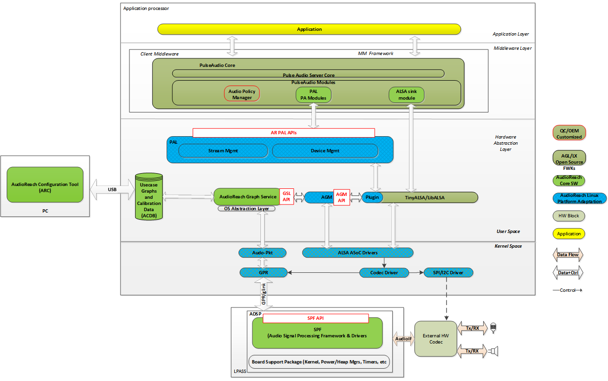
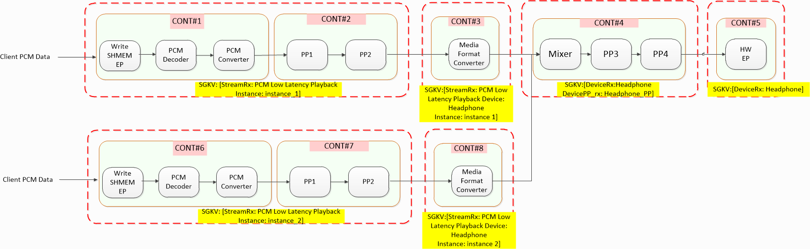
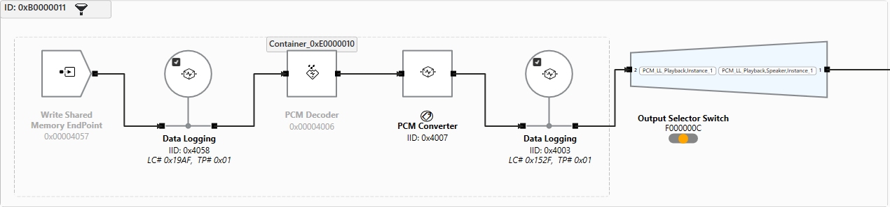
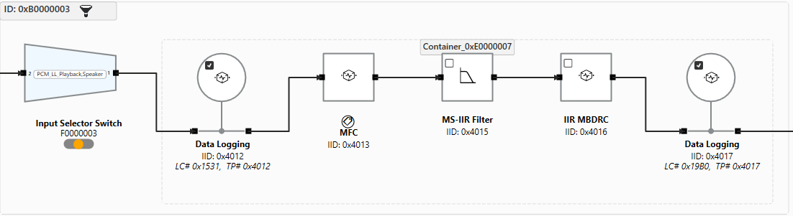
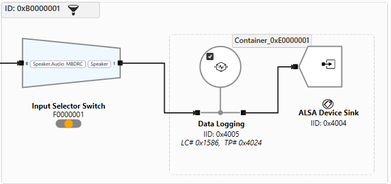
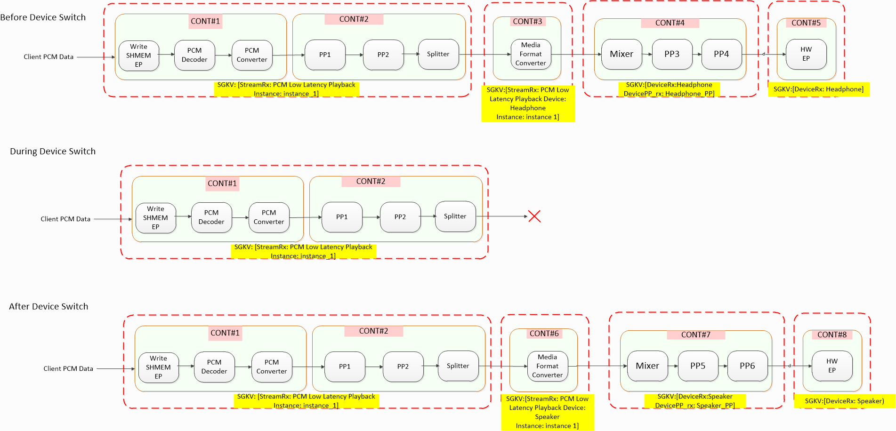

Linux 插件架构¶
架构¶
概览¶
面向 Linux 的 AudioReach 插件架构旨在支持原汁原味的 AudioReach 开发工作流，并提供 AudioReach 所能带来的同样丰富的特性。与此同时，为了服务广泛的 Linux 生态需求，插件架构必须能够与业已成熟的 Linux 音频框架和 API 互操作。尤其是，ALSA 支持在几乎所有（即便不是全部）基于 Linux 的平台上都普遍存在，许多应用和中间件都是构建在 ALSA 之上运行的。尽管插件架构不会借助内核 ALSA 框架来配置 DSP，但仍会通过插件方式支持 ALSA 接口。同时，鉴于许多外设驱动是按照 ASoC CODEC 兼容驱动来开发的，插件架构仍会对接内核 ALSA/ASoC 框架，用于配置音频外设，例如混合信号 CODEC。
从高层来看，如下图所示，插件架构可以看作由五大部分组成。第一部分是一组 AudioReach 内核驱动，负责通过 IPC 驱动与音频 DSP 中的 AudioReach 引擎建立连接，并提供用户空间接口，以传递用户空间与 ARE 之间交换的命令和事件。第二部分是 OSAL 的 Linux 实现，为 AudioReach 图服务（ARGS）提供操作系统服务。OSAL 与 AR 内核驱动对接，以便与音频 DSP 中的 ARE 通信。第三部分是一组软件模块，它们插入到 tinyalsa、alsa lib 和 tinycompress 库中，将 ALSA 命令和构造转换为 ARGS 命令和构造，用于在音频 DSP 中建立和配置音频图。第四部分是平台适配层（PAL），它使客户端无需自己用 GKV/CKV/TKV 管理底层用例的建立和声音设备配置以及调用 ALSA API。最后，第五部分是适配层，用于让知名音频中间件（例如 PulseAudio）能够访问 PAL 所暴露的服务。同时，PulseAudio 对接 ALSA 库的路径仍可得到支持，其配置数据被抽象进用例管理器（UCM）文件中。

Linux 插件架构图构成模块¶
 TinyALSA 插件架构图
TinyALSA 插件架构图
PAL 及其他应用
PAL 及其他应用是对接 TinyALSA API 的客户端。如图所示，这些模块运行在各自的进程上下文中。
PCM、Mixer、Compress
PCM、Mixer 和 Compress 模块是带有插件支持的增强版 TinyALSA 和 TinyCompress 库。
SND Card Parser
解析 card-defs.xml，该文件包含虚拟声卡和设备的定义。tinyalsa 用它来创建虚拟 mixer 控件，并获取与声卡/设备关联的插件库名。Card-defs.xml 包含不同 PCM/Compress 节点的详情，例如设备 id，以及诸如播放/录制和 session_mode 等属性。
card-defs.xml 条目示例：
<card>
<id>100</id>
<name>qcm6490virtualsndcard</name>
<pcm-device>
<id>100</id>
<name>PCM100</name>
<pcm_plugin>
<so-name>libagm_pcm_plugin.so</so-name>
</pcm_plugin>
<props>
<playback>1</playback>
<capture>0</capture>
</props>
</pcm-device>
<pcm-device>
<id>101</id>
<name>PCM101</name>
<pcm_plugin>
<so-name>libagm_pcm_plugin.so</so-name>
</pcm_plugin>
<props>
<playback>0</playback>
<capture>1</capture>
</props>
</pcm-device>
<mixer>
<id>1</id>
<name>agm_mixer</name>
<mixer_plugin>
<so-name>libagm_mixer_plugin.so</so-name>
</mixer_plugin>
</mixer>
</card>
PCM HW、Mixer HW、Compress HW
PCM HW、Mixer HW 和 Compress HW 模块是 TinyALSA 模块，实现了对接既有 ALSA 内核 ops 的所有 ops，并与内核 ALSA 驱动交互。
PCM Plugin、Mixer Plugin、Compress Plugin
PCM Plugin、Mixer Plugin 和 Compress Plugin 模块向 PCM、Mixer 和 Compress 核心框架模块注册所有 pcm、mixer 和 compressed ops 的回调。这些模块加载插件 .so 并调用 plugin_init 函数，并将来自应用的所有 pcm / mixer 调用路由到插件特定的实现。
TinyALSA PCM Plugin、TinyALSA Mixer Plugin、TinyALSA Compress Plugin
PCM、Mixer 和 Compress TinyALSA 插件是 TinyALSA 插件，它们将来自应用的所有 pcm、mixer 和 compress 调用路由到插件特定的实现。
Audio Graph Manager（AGM）
AGM 为 mixer 插件、PCM 和 Compressed API 提供用于建立音频用例的 API。它以音频服务的形式运行（通过平台特定手段，例如 init 脚本），因此可以服务多个 tinyALSA 客户端。
GSL
GSL 是图服务库，负责通过图键向量加载和初始化子图与图、图的建立、图内子图的动态处理、数据命令管理——读/写缓冲区，以及 ARE 模块的校准（Set Config/Get Config）。
AML
ACDB 管理库，也称为 ACDB SW，提供 get/set API 来检索和调整 ACDB DATA 文件中的数据。它提供数据抽象及组织方式，规定校准数据如何被音频驱动及其组件所使用。
IPC
GSL 通过通用包路由器（GPR）协议与 ARE 交换消息。由于 ARE 运行在不同的子系统上，GSL 必须通过 IPC 层通信。该 IPC 实现为一个设备节点，由用户空间 Linux 数据链路层打开。
ASoC Drivers
ASoC 驱动是 ALSA 兼容驱动，它们共同构成声卡，其中的 PCM 设备是从 ASoC dai link 枚举出来的。插件架构在音频 DSP 中的音频图建立/配置和数据接口方面绕过了 ALSA 框架。这些 dai link 意在提供对内核中管理的硬件资源的访问，如 GPIO、时钟和混合信号 CODEC。
通过 ALSA 实现 AudioReach¶
ALSA 动态 PCM 框架提供了将 PCM 前端动态连接到物理 dai link 的能力，如下所示。在以下示例中，PCM 播放和压缩播放前端会话中的任意一个或两个，都可以通过配置已发布的 mixer 控件、widget、route 等，连接到蓝牙和模拟 codec 物理链路中的任意一个或两个。
 ARE 图到 ASoC DPCM 概念图
ARE 图到 ASoC DPCM 概念图
面向 Linux 的 AudioReach 插件架构从 ALSA DPCM 框架获得灵感，以前端和后端的形式对音频图进行建模。前端 PCM 或 compress ALSA 设备可以连接到任意物理链路，物理链路常被称为后端。关于前端和后端如何枚举的细节，将在 AGM 和 TinyALSA Plugin 文档中详细介绍。
在 AudioReach 插件架构中，音频图对于播放和录制通常被组织为以下若干段。同时，系统设计者可以在认为产品有必要时添加额外的子图类型。
- Stream（流）：该段提供数据写/读接口，如果数据是压缩的，则执行解码/编码。
- Stream Post/Pre-Processing（PP，流后/前处理）：该段包含基于流的处理模块，例如均衡器。
- Per Stream Per Device（PSPD，每流每设备）：该段用于容纳将流媒体格式转换为设备媒体格式的模块。
- Device-PP（设备 PP）：该段由用于声音设备调校的 PP 模块组成。例如，DRC 处理对扬声器设备很重要。
- Device（设备）：硬件端点，例如 I2S 端口。
这些段在 AudioReach 术语中被称为子图。前端一般代表 stream 和 stream PP 子图，而后端代表 PSPD、device-PP、device 子图。在插件架构中，与前端和后端关联的基于字节的 mixer 控件，供客户端在启动 PCM 设备和设备切换前，按需分配 GKV 和 CKV 作为所需的元数据设置。
一旦前端通过路由 mixer 控件连接到后端，就会通过拼接子图的 GKV 以及通过 mixer 控件分配的 CKV，形成完整的 GKV。在打开前端 PCM 或 compress 设备时，AGM 用拼接后的 GKV 和 CKV 调用 GSL API，以在 ARE 中建立图并应用校准。同时，AGM 打开与所连接后端对应的内核 pcm 设备，以启动音频外设建立。这一机制构成了通过 ALSA 构建 AudioReach 图的基础设计，并使得包括 SoC 和音频外设在内的完整音频通路得以实现。
为子图分配键向量的准则¶
基于上一节所述的设计，前端（FE）和后端（BE）的元数据（即 GKV 和 CKV）可以在三个段上指定。每个段关联一个元数据 mixer 控件。
- Stream（流）——包含 Stream、Stream PP 子图的 KV。同一组 KV 可用于指定 Stream 和 Stream PP。
- Device（设备）——包含 HW EP 相关子图的 KV，也可选地包含 Device PP 子图。
- Stream Device（流设备）——包含 stream 与 device 子图之间的任何子图，例如 Device pp、PSPD。
插件架构的图设计示例¶
多流到单设备（MSSD）播放¶
图概览¶

MSSD 场景的音频图示例图中描绘了 MSSD 播放场景下音频图的参考设计。在此示例中，stream 子图和 stream-PP 子图被合并为一个 stream 子图。Stream 子图由写共享内存端点、PCM 解码器、PCM 转换器组成。客户端将 PCM 采样传递给写共享内存端点。放置 PCM 转换器是为了在必要时将 PCM 采样转换为流特定后处理模块所支持的格式。Stream 子图的输出被送入 stream-device 子图，后者由媒体格式转换器（MFC）组成。放置 MFC 是为了将流侧（stream-leg）PCM 转换为设备侧（device-leg）PCM 格式。转换之后，stream-device 子图的输出被送入 device PP 子图进行设备特定的后处理。注意 mixer 被放置在子图起始处以混合输入流。Device PP 子图的输出随后被送入 device 子图，该子图包含硬件端点模块（例如 I2S 驱动），用于最终从 SoC 渲染输出。
Linux 平台的参考播放图通常由以下子图组成：
- Stream —— DSP 与高层操作系统之间的软件接口。
- Stream-PP —— 包含流特定的后处理（PP）模块（例如低音增强、混响等）。
- Stream-Device —— 由任何每流每设备的模块组成，例如采样率/媒体格式转换。
- Device-PP —— 包含硬件设备特定的 PP 模块（常见示例包括 IIR 滤波器、MBDRC 等）。
- Device —— 硬件端点，最常见的是麦克风或扬声器。
Rx（音频输出）用例将遵循此顺序（Stream -> Device），而 Tx（音频输入）用例则相反（Device -> Stream）。默认情况下，会为 Stream、StreamPP、Device 和 DevicePP 定义 GKV。StreamDevice 子图没有唯一的 GKV，而是使用 Stream 与 Device GKV 的组合。
请注意，并非每个图都必须有 Stream-PP、Stream-Device 或 Device-PP 子图。最常见的情况是，子图仅为每个 Stream 或 Device 各定义一次，而不同的校准通过 PP 子图来实现。
键向量设计¶
| 子图 | 键 |
|---|---|
| Stream | Key = StreamRx - 播放类型 Key = Instance - 播放实例 |
| Stream Device | Key = StreamRx - 播放类型 Key = Device - 逻辑声音设备 |
| Device PP | Key = Device - 逻辑声音设备 Key = DevicePP_rx - 设备 PP 集名称 |
| Device | Key = Device - 逻辑声音设备 |
| 元数据分组 | KV |
|---|---|
| Stream1 Metadata | StreamRX1 KVs |
| Stream2 Metadata | StreamRX2 KVs |
| Device Metadata | DeviceRX KVs |
| Stream1 + Device Metadata | StreamRX1DeviceRX KVs, DeviceRX PP KVs |
| Stream2 + Device Metadata | StreamRX2DeviceRX KVs, DeviceRX PP KVs |
下面是来自 RB3 Gen2 ACDB 文件的低延迟播放图的分解：
StreamRX 子图：

Stream-Device 子图：

Device PP 子图：

Device 子图：

GKV
GKV1:
GKV2:
单流到多设备（SSMD）播放¶
图概览¶
图中描绘了 SSMD 播放场景下音频图的参考设计。本质上，stream 子图与 MSSD 场景几乎完全相同，只是在 stream 子图末尾额外添加了一个分离器（splitter），使得输出可以分别路由到耳机和扬声器的两个 stream-device 子图。然后，分别为耳机和扬声器提供 device PP 和 device 子图。
 SSMD 场景的音频图示例
SSMD 场景的音频图示例
键向量设计¶
子图的键向量设计与 MSSD 场景相同。
| 元数据分组 | KV |
|---|---|
| Stream Metadata | StreamRX1 KVs |
| Device1 Metadata | DeviceRX1 KVs |
| Device2 Metadata | DeviceRX2 KVs |
| Stream + Device Metadata | StreamRXDeviceRX1 KVs, DeviceRX1 PP KVs |
| Stream + Device Metadata | StreamRXDeviceRX2 KVs, DeviceRX2 PP KVs |
GKV
GKV1:
GKV2:
设备切换¶
设备切换描述的是这样一种场景：由于外部事件（例如终端用户拔出耳机），音频输出从一个声音设备被路由到另一个声音设备。在插件架构中，其机制是拆除音频图的设备侧，并实例化新的设备侧子图，以构成新的完整音频图。下图演示了从耳机到扬声器的设备切换。在设备切换期间，耳机的 Stream-Device、Device PP、Device 被拆除，并实例化扬声器同类型的新子图。

设备切换示例通过 ALSA 建立用例指南¶
建立序列¶
- 下发 mixer 控件以建立音频外设内部的路由
- 下发 mixer 控件以设置后端的媒体格式
- 下发 mixer 控件以设置 device 子图的元数据
- 下发 mixer 控件以设置 Stream 和 Stream PP 子图的元数据
- 下发 mixer 控件以设置 PSPD 和 Device PP 子图的元数据
- 下发 mixer 控件以将前端连接到后端
- 调用 tinyalsa API 以启动用例
pcm_open()pcm_prepare()pcm_start()pcm_write()/pcm_read()
关闭序列¶
pcm_stop()pcm_close() 下发 mixer 控件以断开前端与后端的连接
Mixer 控件与负载¶
- 设置后端 pcm 配置：
- 连接/断开前端与后端：
- 配置设备元数据：
- 配置 stream 和 stream PP 子图元数据：
- 配置 stream device 和 device PP 子图元数据：
：该值派生自 ALSA asound.h 中的 SNDRV_PCM_FORMAT。 ：该字符串由 agm 解析 /proc/asound/pcm 得到，用以获取给定单板上所有可用的硬件端点后端。 - ：下面代码片段中的 agm_meta_data_gsl 结构体描绘了负载的格式。子图 KV 和子图 CKV 的传递前面已有描述。除了 GKV 和 CKV，负载中还有一部分用于传递属性 ID。目前，它仅用于辅助设备切换用例。
/**
* Key Vector
*/
struct agm_key_vector_gsl {
size_t num_kvs; /**< number of key value pairs */
struct agm_key_value *kv; /**< array of key value pairs */
};
struct sg_prop {
uint32_t prop_id;
uint32_t num_values;
uint32_t *values;
};
/**
* Metadata Key Vectors
*/
struct agm_meta_data_gsl {
/**
* Used to lookup the calibration data
*/
struct agm_key_vector_gsl gkv;
/**
* Used to lookup the calibration data
*/
struct agm_key_vector_gsl ckv;
/**
* Used to lookup the property ids
*/
struct sg_prop sg_props;
};
用例的 Mixer 控件设置示例¶
播放 SSSD¶
建立序列
‘CODEC_DMA-LPAIF_WSA-RX-0 rate ch fmt’ 48000 2 2(PCM_16) 1(FIXED_POINT)
‘CODEC_DMA-LPAIF_WSA-RX-0 metadata’ bytes //表示设备/可选 devicePP 的 KV 的字节
‘PCM100 control’ Zero// 设置开关以指示后续 mixer 控件配置针对 stream‘PCM100 metadata’ bytes//表示 stream、 streamPP 的 KV 的字节‘PCM100 control’ CODEC_DMA-LPAIF_WSA-RX-0// 设置 control 以 指示后续 mixer 控件配置针对 stream 与 device 之间的图 配置。‘PCM100 metadata’ bytes//表示 StreamDevice(PSPD)、DevicePP 子图的 KV 的字节‘PCM100 getTaggedInfo’ bytes // 用于检索为 PCM100 和 CODEC_DMA-LPAIF_WSA-RX-0 所配置的 GKV 的模块 tag、mid、iid 信息
‘PCM100 control’ Zero// 设置开关以指示后续 mixer 控件配置针对 stream‘PCM100 setParam’ bytes//表示 stream 图中模块 配置‘PCM100 control’ CODEC_DMA-LPAIF_WSA-RX-0// 设置 control 以 指示后续 mixer 控件配置针对 stream 与 device 之间的图 配置。‘PCM100 setParam’ bytes//表示 StreamDevice(PSPD)、DevicePP 子图 模块配置的字节‘PCM100 connect’CODEC_DMA-LPAIF_WSA-RX-0 // 将 PCM100 连接到 CODEC_DMA-LPAIF_WSA-RX-0 AIF（前端到后端连接）
pcm_open()pcm_prepare()pcm_start()pcm_write()/pcm_read()拆除序列
pcm_stop()
pcm_close()
‘PCM100 disconnect’ CODEC_DMA-LPAIF_WSA-RX-0 // 将 PCM100 连接到 CODEC_DMA-LPAIF_WSA-RX-0 AIF（前端到后端连接）
5.2. 播放 SSMD¶
‘CODEC_DMA-LPAIF_WSA-RX-0 metadata’ bytes//表示 设备/可选 devicePP 的 KV 的字节‘PCM100 metadata’ bytes//表示 stream、 streamPP 的 KV 的字节‘PCM100 control’ CODEC_DMA-LPAIF_WSA-RX-0// 设置 control 以 指示后续 mixer 控件配置针对 stream 与 device 之间的图 配置。‘PCM100 metadata’ bytes//表示 StreamDevice(PSPD)、DevicePP 子图的 KV 的字节‘PCM100 getTaggedInfo’ bytes // 用于检索特定 GKV 的模块 tag、mid、iid 信息
‘CODEC_DMA-LPAIF_WSA-RX-0 rate ch fmt’ 48000 2 2(PCM_16) 1(FIXED_POINT)‘PCM100 control’ Zero// 设置 control 以指示后续 mixer 控件配置针对 stream 与 device 之间的图 配置。‘PCM100 setParam’ bytes//表示 stream 图中 模块的配置‘PCM100 control’ CODEC_DMA-LPAIF_WSA-RX-0// 设置 control 以 指示后续 mixer 控件配置针对 stream 与 device 之间的图 配置。‘PCM100 setParam’ bytes//表示 StreamDevice(PSPD)、DevicePP 子图 模块配置的字节‘PCM100 connect’ CODEC_DMA-LPAIF_WSA-RX-0 // 将 PCM100 连接到 CODEC_DMA-LPAIF_WSA-RX-0 AIF
pcm_open()pcm_prepare()pcm_start()pcm_write()/pcm_read()‘CODEC_DMA-LPAIF_WSA-RX-1 metadata’ bytes//表示 设备/可选 devicePP 的 KV 的字节‘PCM100 control’ CODEC_DMA-LPAIF_WSA-RX-1// 设置 control 以 指示后续 mixer 控件配置针对 stream 与 device 之间的图 配置。‘PCM100 metadata’ bytes //表示 StreamDevice(PSPD)、DevicePP 子图的 KV 的字节
‘PCM100 getTaggedInfo’ bytes // 用于检索特定 GKV 的模块 tag、mid、iid 信息
‘CODEC_DMA-LPAIF_WSA-RX-1 rate ch fmt’ 96000 4 2(PCM_16) 1(FIXED_POINT)‘PCM100 control’ CODEC_DMA-LPAIF_WSA-RX-1// 设置 control 以 指示后续 mixer 控件配置针对 stream 与 device 之间的图 配置。‘PCM100 setParam’ bytes //表示 StreamDevice(PSPD)、DevicePP 子图模块配置的字节
‘PCM100 connect’ CODEC_DMA-LPAIF_WSA-RX-1 // 将 PCM100 连接到 CODEC_DMA-LPAIF_WSA-RX-1 AIF
5.3. 播放 MSSD¶
‘SLIM_0_RX metadata’ bytes//表示 设备/可选 devicePP 的 KV 的字节‘PCM100 metadata’ bytes//表示 stream、 streamPP 的 KV 的字节‘PCM100 control’ SLIM_0_RX// 设置 control 以指示 后续 mixer 控件配置针对 stream 与 device 之间的图 配置。‘PCM100 metadata’ bytes//表示 StreamDevice(PSPD)、DevicePP 子图的 KV 的字节‘PCM100 getTaggedInfo’ bytes // 用于检索特定 GKV 的模块 tag、mid、iid 信息
‘SLIM_0_RX rate ch fmt’ 48000, 2, 2(PCM_16) 1(FIXED_POINT)‘PCM100 control’ Zero// 设置 control 以指示后续 mixer 控件配置针对 stream 与 device 之间的图 配置。‘PCM100 setParam’ bytes//表示 stream 图中 模块的配置‘PCM100 control’ SLIM_0_RX// 设置 control 以指示 后续 mixer 控件配置针对 stream 与 device 之间的图 配置。‘PCM100 setParam’ bytes//表示 StreamDevice(PSPD)、DevicePP 子图 模块配置的字节‘PCM100 connect’ SLIM_0_RX // 将 PCM100 连接到 SLIM_0_RX AIF
pcm_open()pcm_prepare()pcm_start()pcm_write()/pcm_read()‘PCM101 metadata’ bytes //表示 stream、streamPP 的 KV 的字节
‘PCM101 control’ SLIM_0_RX// 设置 control 以指示 后续 mixer 控件配置针对 stream 与 device 之间的图 配置。‘PCM101 metadata’ bytes//表示 StreamDevice(PSPD)、DevicePP 子图的 KV 的字节‘PCM101 getTaggedInfo’ bytes // 用于检索特定 GKV 的模块 tag、mid、iid 信息
‘PCM101 control’ Zero// 设置 control 以指示后续 mixer 控件配置针对 stream 与 device 之间的图 配置。‘PCM101 setParam’ bytes//表示 stream 图中 模块的配置‘PCM101 control’ SLIM_0_RX// 设置 control 以指示 后续 mixer 控件配置针对 stream 与 device 之间的图 配置。‘PCM101 setParam’ bytes//表示 StreamDevice(PSPD)、DevicePP 子图 模块配置的字节‘PCM101 connect’ SLIM_0_RX // 将 PCM101 连接到 SLIM_0_RX AIF
pcm_open()pcm_prepare()pcm_start()pcm_write()/pcm_read()